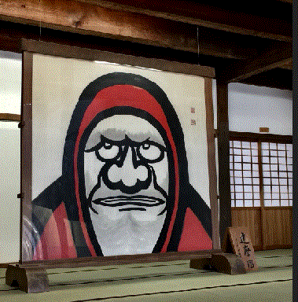

name:K.S
date of birth:199x/xx/xx
hobby:reading, visiting shrines
favorite food:potatoes
least favorite food:mushrooms
favorite word:江山風月、本無常主、閑者便是主人
favorite movie:ハウルの動く城
webページについて:htmlとcssの勉強を兼ねて作っています。edgeとIEで正常に映ることを確認。写真は数年前の家族旅行のときのもの。
